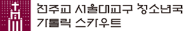

NOTICE
청소년국
2026 교육활동 침해 행위 예방교육 계획 2026 교육활동 침해 행위 예방교육 계획 탭 1
2026.01.22
(재)서울가톨릭청소년회
2026 교육활동 침해 행위 예방교육 계획 2026 교육활동 침해 행위 예방교육 계획
2026.01.22
청소년국
2026 교육활동 침해 행위 예방교육 계획 2026 교육활동 침해 행위 예방교육 계획
2026.01.22
청소년국
2026 교육활동 침해 행위 예방교육 계획 2026 교육활동 침해 행위 예방교육 계획
2026.01.22
(재)서울가톨릭청소년회
2026 교육활동 침해 행위 예방교육 계획 2026 교육활동 침해 행위 예방교육 계획
2026.01.22
청소년국
2026 교육활동 침해 행위 예방교육 계획 2026 교육활동 침해 행위 예방교육 계획
2026.01.22
DEPARTMENT
교회 내에서 발달장애인이 주체가 되어 원활하게 신앙생활을 할 수 있도록 교리교육과 첫 영성체 및 다양한 활동 프로그램을 연구하며, 본당 장애인 주일학교 설립과 운영을 돕고 있습니다.
수태부터 영유아기까지 가정과 유아교육기관, 본당의 상호 협력을 통해 영유아들이 자기 자신과 이웃, 자연, 하느님과의 일치를 이루며 그리스도교적 인격을 완성할 수 있도록 연구하며 지원하고 있습니다.
어린이들이 예수님의 삶과 말씀으로 올바른 가치관을 형성하며 이웃에 사랑을 전하는 작은 그리스도가 되도록 교육하는데 중점을 두고 교리 연구, 교사 양성교육 및 어린이 교육과 자료제공을 지원하고 있습니다.

청소년, 청년들이 개인의 자질을 개발하고, 심신을 단련하여, 봉사하는 실천적 신앙인이 될 수 있도록 교회 정신 안에서 하느님과 이웃 사랑을 기본으로 하는 스카우트의 교수법을 바탕으로 지원하고 있습니다.
서울 시내 중고등학교의 복음화를 목표로 삼고 있습니다. 특히 중고등학생들에게 합당한 인성교육과 신앙교육을 보급하기 위해 교재연구에 힘쓰고 있고, 신심 깊은 교사와 봉사자를 사목협력자로 양성하고 있습니다.
본당 중고등부 주일학교 교사의 신앙 증진 및 교리적 양성과 CYA 친구들의 리더 양성 교육을 통해 각 본당의 활성화 및 청소년의 복음화에 도움을 주는 역할을 하고 있습니다.
'선택'은 '서로 알고 사랑 하며 나누기 위하여 (To Know, Love and Serve You)'라는 슬로건 아래 젊은이들이 자신이 맺고 있는 인간 관계 안에서 자신이 누구인가를 발견하고, 그 관계에 충실함으로써 가정, 사회, 교회 공동체 그리고 하느님께 더욱 깊은 소속감을 갖도록 이끌어줍니다.
서울 소재 대학 내 ‘교수회-교직원-대학원생-대학생’ 가톨릭 신자들이 캠퍼스 공동체를 이루어 내적 복음화, 캠퍼스 복음화, 사회 복음화를 위해서 살아가면서 학교와 사회 안에서 예수 그리스도를 증거하는 삶이 무엇인지를 찾고 실천할 수 있도록 사목하고 있습니다.
서울대교구에 속한 청년들을 대상으로 본당과 지구 청년 사목 활동의 연계를 위한 교구 상임위의 운영과 사목 협력자로서의 성장을 위한 전례, 피정 등의 교육행사를 지원합니다.
신자들이 본당을 잠시 떠나 일상에서의 하느님 체험을 자연 안에서 식별하고 되새길 수 있게 도와주는 사목지원부서로서 특히 어린이들을 대상으로 복사학교, 생태영성캠프 등의 프로그램을 중점적으로 운영합니다.
지역 내 학교 안 밖 청소년들이 스스로 주인이 되어 배움을 선택하고 미래를 준비해 나갈 수 있도록 다양한 경험의 기회를 제공하여, 참 인간으로 성장하도록 돕는 공간이자 학교 밖 배움터입니다.
청년 문화의 활성화를 목적으로 재단법인 서울가톨릭청소년회가 운영하는 젊은이들의 신앙 배움터이자 공연을 기반으로 한 청년 복합 문화 공간으로, 이 시대 청년들의 현실, 위기, 그리고 행복을 다양한 문화 예술 프로젝트를 통해 품고 지지하려 합니다.
청소년복지지원법 제16조에 의거하여, 신체적, 인지적, 정신적 측면에서 청소년들에 대한 가출 및 비행을 예방, 가출 청소년의 긴급생활지원, 선도, 건전한 가정ㆍ사회로의 복귀를 위한 지원을 수행함으로 건전한 청소년 육성과 보호에 기여하고자 합니다.
가톨릭 정신의 기치 아래 청소년 시기에 필요한 기량과 품성을 함양하여, 청소년들이 건강한 성장을 할 수 있도록 다양한 체험의 기회를 부여하며, 자신의 역량을 강화할 수 있는 수련거리를 제공하여 인간다운 삶을 영위할 수 있도록 돕는 청소년수련시설입니다.
서울시로부터 (재)서울가톨릭청소년회가 위탁 운영하는 시설로 청소년들이 자신의 끼와 역량을 개발하고 성장할 수 있도록 도움을 주고 나와 우리를 조화롭게 아우르는 ‘밝고 건강한 참인간’으로 성장할 수 있는 환경을 제공하는 공간입니다.
서울시로부터 위탁받아 운영하는 청소년 활동, 상담, 복지 등을 지원하는 청소년시설 입니다. 진리·사랑·헌신의 이념아래 청소년의 권리를 옹호하고 청소년들의 삶의 질을 향상시키기 위한 수련활동, 인성교육, 상담프로그램 등을 청소년들과 함께 진행하며 청소년들의 행복한 성장을 위한 건전한 심신수양과 여가생활을 위한 장을 제공합니다.
어려운 가정환경으로 인해 미술에 대한 꿈을 펼칠 기회조차 가지지 못하는 학생들이 화요일아침예술학교(학력인정 고등학교)에 진학하여 대학 진학을 위한 입시교육 및 취업을 통한 자립을 촉구하는 진로교육을 통해 자신의 인생을 개척해 나갈 수 있는 기회와 방법 지원하는 기숙형 대안학교 입니다.
중고등통합 6년 과정의 기숙형 무료 음악 대안학교입니다. 경기도교육청의 인가로 2020년 3월 개교하였으며 사회복지시설에 거주하는 청소년(고아)을 대상으로 음악의 재능을 갖고 있는 학생들을 선발하여 교육합니다. 가톨릭의 인간사랑 정신의 바탕에 치유(治癒)와 자립(自立)을 목적으로 하는 음악인을 육성하기 위한 학교입니다.